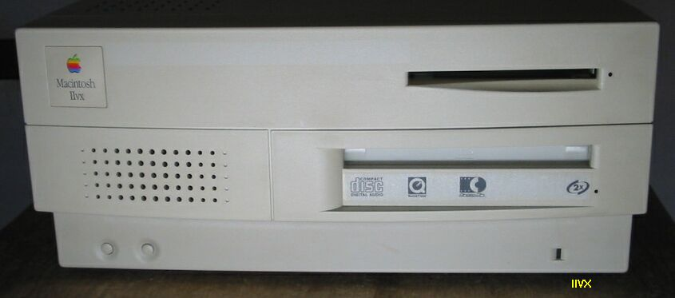

ⅡVi改造について

写真は、IIViと同型のIIVXです。
ⅡViについては、その筐体がMACらしくない、また性能も６８０３０の１６MHｚということで、以前の機種よりも悪くなっているなどあまり評判が良くありません。私が今のⅡViを手に入れたのは２台目で、1台目はいじっているうちに、具合が悪くなってしまい、部品に還元してしまいました。今のⅡViは、近くのパソコンやさんで、下取りしたものを、ただ同様の値段で、譲ってもらったものです。完動品で、HDさえ取り付ければ、そのまま使えました。何かに使うには、ちょっと動作が遅すぎ、動作チェックするだけでもストレスを感じます。さてどうしようかと考えたのですが、Quadra650のロジックボードが余っていたので、即、入れ替えてしまいました。ⅡVi、ⅡVx、Centris650、Quadra650、PowerPC7100の筐体とロジックボードは、寸法とコネクタ位置が共通で、そのまま入れ替えが可能です。Quadra650にはⅡViに無い、EtherNetコネクタがついているのですが、バックパネルのその部分は、押せば外れるようになっており、加工はいりません。ⅡCx、ⅡCiも寸法は同じですが、コネクタの位置が違ったりして、少々加工がいります。（別ページで取り上げています。）結局、ⅡViはQuadra650として、動くようになったわけですが、３３MHｚではもったいないので、16.5MHｚの水晶発振器に２０MHｚのものをはんだ付けして、CPUクロック４０MHｚにしてあります。もともとついている発振器は足が4本の、TTL－ICのような、プラスチックパッケージのものですが、1番pinをGroundに接続すると発振がとまります。7番pinがGroundで、8番pinがOutput、14番pinがVccです。つまり、1番と7番を接続して、あとは、新しい発振器を元の発振器と並列に接続すればいいわけです。もうひとつ注意点は、Quadra650は、68LC040では動作しませんので、FPUの付いた、68040 を使う必要があります。Centris650は68LC040でも動作します。（Centris650についてはWombatのページで取り上げています。）
68Kマッキントッシュのページに戻る